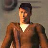
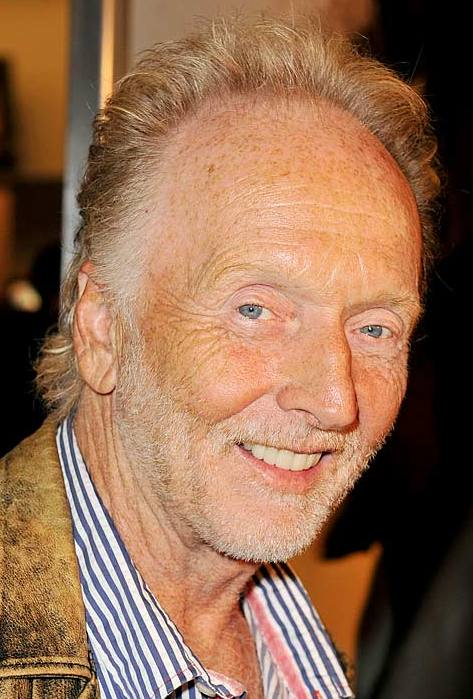
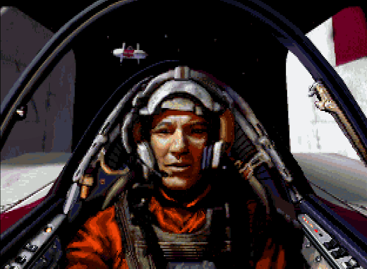

Немного информации о себе
Максим Николаев
Основное
- Родной город: Москва
- Языки: Русский, Čeština, English
- Город: Москва
- Образование
- ВУЗ: МАИ '09
- Факультет: Прикладной математики и физики
- Кафедра: Математическая кибернетика
- Форма обучения: Дневное отделение
- Статус: Выпускник (специалист)
- Школа: № 224 '03 Москва, 1993–2003 (б) Система СТАРТ
- Убеждения
- Главное в жизни: Семья и дети
- Отношение к курению: Негативное
- Отношение к алкоголю: Умеренное
- Деятельность: программист
Интересы:
- электрогитара
- сноуборд
- языки
- мототехника
- вулканические пустыни
- электронные приборы
- работа
- технологии
Любимая музыка:
- Leeway
- Orange 9mm
- Moi Dix Mois
- The Gone Jackals
- Alice In Chains
- Cathedral
- Jeff Beck
- Arch Enemy
- Switchblade Symphony
- Clint Bajakian
- Kevin Schilder
- Inugami Circus-Dan
- Kevin Manthei
- Dire Straits
- Alice Cooper
- Kenny Chou
- The Donnas
- Duane Decker
- Angtoria
- Gravity Kills
- http://gh.ffshrine.org?r=69110
Любимые фильмы:
- Star Wars IV: A New Hope
- Blade Runner
- Kill Me Later
- Men at Work
- The Shadow [1994 film]
Любимые телешоу:
- "От Винта!"
- BattleStar Galactica
- FPE-tv
Любимые игры:
- Dark Forces
- Indiana Jones and the Infernal Machine
- Comanche
- Full Throttle
- X-Wing Alliance
- Thief
- Descent
- Cyberia
- Deus Ex
- Crusader No Remorse
- Summoner
- Elastomania
- Heroes of Might and Magic
- Сапёр
Моё увлечение музыкой из компьютерных игр стало активно развиваться с тех пор как я открыл для себя сайты abandonia и galbadia hotel. Получив доступ к ним я смог скачать себе треки из игр в которые я играл или о которых слышал.
Любимые цитаты:
Let's agree to respect each other's views, no matter how wrong yours may be.
Не мешайте человеку думать, дайте ему спокойно ошибиться
Imagine You Were At My Station And You Brought Your Motor To Me
Одно здоровье
Гафелля горделя, топсель шкота перетяжка!
Easy money - that's what I like.
Не бойтесь потерять тех, кто не побоялся потерять вас.
IE грех не перезагрузить.
Мозг не дремлет!
Ты им не поможешь, они должны сами себе помочь!
Один провод один ip-адрес.
Kiss the blade of cold-cold steel.
Dr. Delacroix was able to design a device that can bend and warp space.
Before we begin, let's get something straight. I don't like hotshots. If you want to impress me, show me control and discipline.
О себе
- Программирую на javascript, python, actionscript люблю возиться с xml и html.
- Имею диплом мотомеханика 3-го разряда по устройству мотоцикла и электрике.
- Имею сертификат Basic Principles of Advance Riding безопасного вождения мотоцикла.
- Люблю ездить по свободным дорогам.
Прочее
Galbadia Hotel: http://gh.ffshrine.org?r=69110